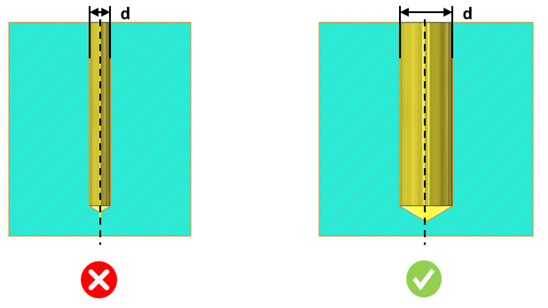

本ルールは、構成で指定された材料に対応する最小穴径の条件をチェックします。
小径ドリルは芯ずれを起こしやすく、また破損しやすいため、量産には推奨されません。鋼やチタンなどの硬質材料では、小径穴の加工時に切りくずの排出が困難になります。多くの場合、硬質材料によって工具が頻繁に摩耗します。
一般的な指針として、硬質材料に小径穴を加工する場合、ドリルは芯ずれしやすく、頻繁に摩耗します。止まり穴の場合は、切りくずの排出がさらに困難になります。
ルール構成では、鋼やチタンなどの硬質材料に基づいて、デフォルトの最小穴径および対応する最小穴径を設定できます。

d = 穴径